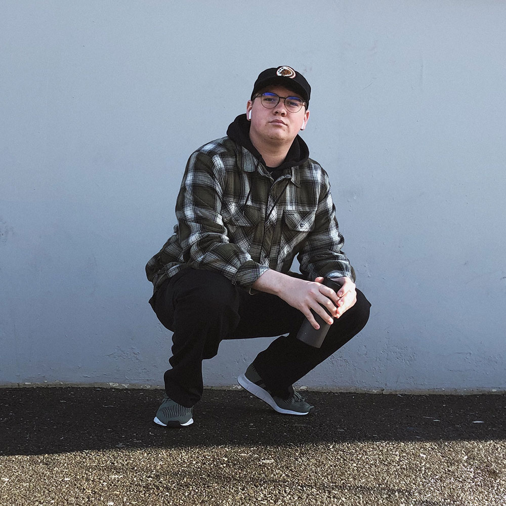

Cameron is a Graphic Designer living in the Bay Area. He is currently working two jobs and is a Full-time Student at California College of the Arts.Cameron enjoys the outdoors... the real ones not the ones you see on t.v. Cameron is also a pour-over coffee connoisseur to such an extent that when he is brewing at home he wears a barista hat and apron. "It's an asthetic thing" -Cameron Cameron does not yet have a kid and doesn't plan to anytime soon. He enjoys hanging out with friends, barbecuing burgers, and listening to good music.
What is good ‘screen based’ design?
I think good screen based design is recognized by its attention to detail, and created with the audience in mind
Is it important to have a design background before getting into html/css
Although it isn't necessary having a basic understanding of design and that process is extremely helpful, being able to come from a perspective of design tends to break down the way you think about what your putting in the screen
Why did you choose graphic design as a career and do you see yourself involved with online design.
Naturally I am a detail oriented person, but my exposure to design was accidental thanks to a high school counselor mistakingly placing me in a graphic design intro class. Ever since then iv'e been hooked. I do see myself working with online design in the future because its an essential tool to have on my belt.
As a designer yourself, what other online designers do you look up to?
some contemporary designers I follow are Aaron Draplin, Adi Goodrich, and Craig Ward.
How does the web influence design?
the web influences the web in countless ways, it grabs our attention and focuses
Where do you get most of your inspiration and do you think that will translate to you web design process as you do more of it?
most of my inspiration has come from practicing professionals and a constant watching of behance, dribble, and fonts in use, a lot if the projects I have been interested used design and I have definitely been influenced by that in the way I think about web design.
As a developing designer has your perception about the web changed?
Undoubtedly, a lot of my attention goes to the design details and interactions that i have with the web.
During this interview Cameron made a disastrous switch from a pour-over coffee connoisseur to an extreme-unicycle enthusiast. “It’s kinda hard to drink coffee when you’re rockin’ down a set of stairs on a single wheel of glory.” -Cameron T.